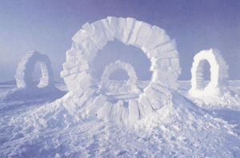

J'ai découvert le thème du zéro déchet lors d'un atelier proposé par une association locale. L'idée m'a tout de suite plu et j'ai décidé de créer une séquence complète pour mes élèves.
J'ai transformé un coin de la classe en "musée" avec des fiches mémo sur deux concepts artistiques : le land art et l'upcycling. Les élèves ont pu observer et catégoriser les œuvres de différents artistes.
Pour cette séquence, j'ai créé plusieurs documents :
Cette approche permet de sensibiliser les élèves à l'écologie tout en développant leur créativité artistique. Le résultat a été formidable et les élèves ont adoré pouvoir créer de l'art à partir de "rien" !